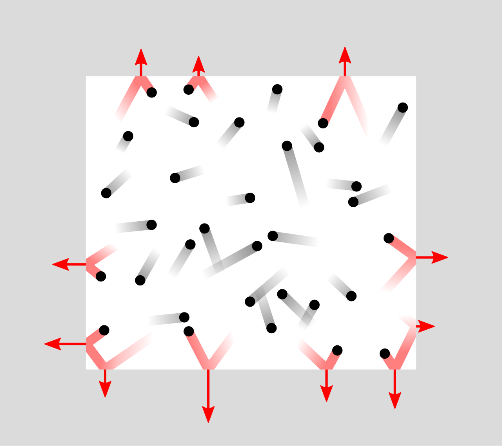
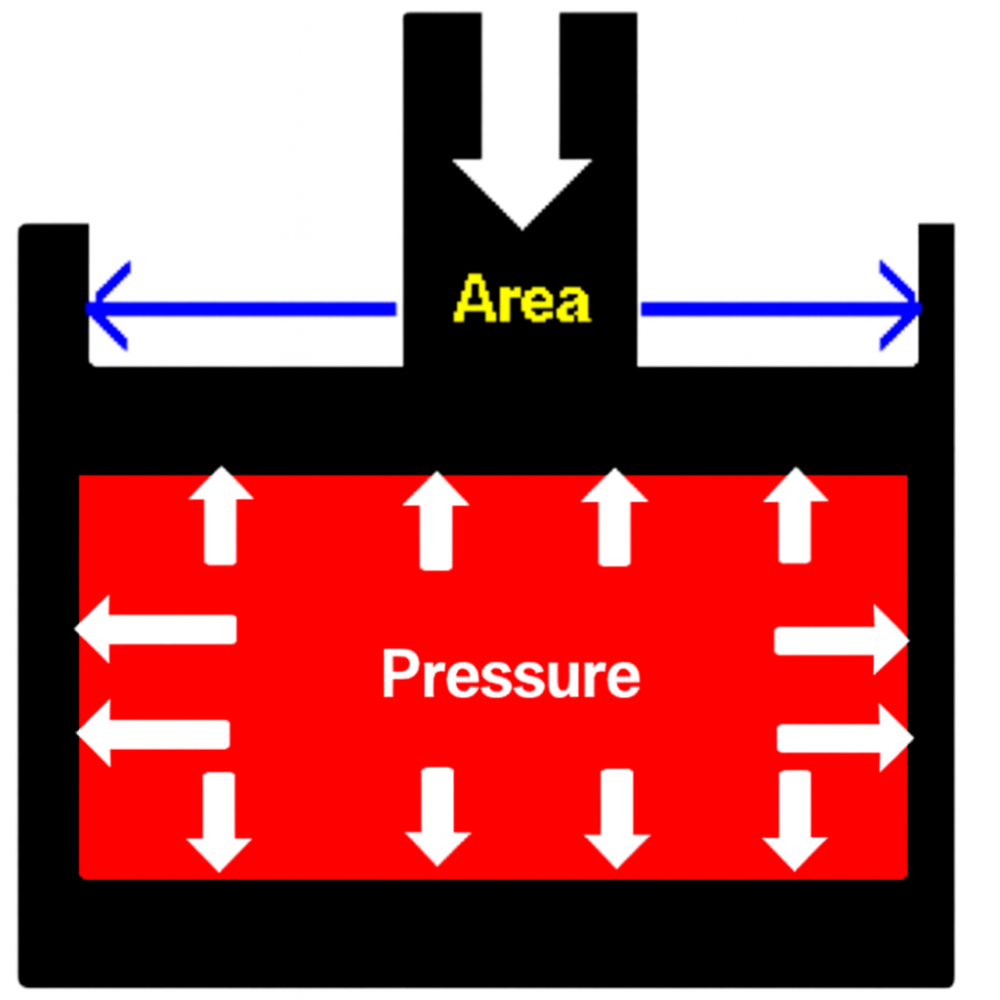

Simple explanations for anyone curious about flying and aircraft
(A) WHAT IS AVIATION
Aviation is the science and operation of flying aircraft. Aircraft includes fixed wing Airplane, rotaing wing Helicopters, Gliders, Airships and Hotair balloon. Airplanes, Helicopters, Gliders, Drones and Kites are called as Heavier-than-air aircraft whereas, Hotair balloons and Airships are known as Lighter-than-air aircraft.
Aviation connects people, goods, and cultures across the world.Aviation is the science, business, and operation of flying aircraft. Safety plays a major role because every flight involves human lives, complex technology, and global networks. Aviation safety prevents accidents and incidents through regulation, training, and risk management. Sub‑branches include civil aviation and military aviation. Civil aviation is further classified as General Aviation (GA) also known as Private Aviation, where an individual can operate aircraft for his own use or business and Commercial Air Transport (CAT) for transportation of passengers, mails and cargo for public use on payment basis.
At its core, aviation is about controlled flight through the atmosphere. It’s a blend of engineering, meteorology, navigation, medicine psychology and human skill. Whether Understanding aviation doesn’t require technical expertise. It begins with curiosity—how do planes fly, who ensures they’re safe, and what happens behind the scenes at an airport? This simple book offers a clear, jargon-free foundation
Aircraft means any machine that can derive support in the atmosphere.
It includes fixed-wing airplanes,
rotating-wing rotorcraft (helicopters),
powered or unpowered gliders,
drones,
airships,
hot-air balloons,
and kites.
Lighter-than-air aircraft include
airships and
hot-air balloons.
Heavier-than-air aircraft include
fixed-wing airplanes,
rotating-wing rotorcraft,
drones,
gliders,
and kites.
Aircraft operations used for private or business purposes are called
Private Aviation or
General Aviation.
Aircraft operations used for carrying passengers, cargo, or mail on a payment basis
are known as Commercial Air Transport.
(B) HOW AIRCRAFT FLY
Basic Aerodynamics
1. Units and Measurements
Before proceeding with principles, it is essential to understand the basic measurements of the
Imperial and
Metric (SI) systems, along with their units, to avoid confusion and mix-ups.
Imperial System
The Imperial system, established in 1824 by the British Empire, standardized traditional measures.
It uses:
Inches (in), feet (ft), yards (yd), miles (mi) for length
Pounds (lb), ounces (oz) for weight
Gallons (gal), pints (pt) for volume
Pounds per square inch (psi) for pressure
Fahrenheit (°F) for temperature
It is still common in the United States, partly in the
United Kingdom, and in some regions of
Canada. Examples include:
UK road signs in miles (mi)
U.S. tire pressure in psi
Height in feet (ft) and inches (in)
Weather reported in °F
SI (Metric) System
The SI system began with the metric system in France in 1791 and was officially adopted worldwide in 1960.
It uses base units such as:
Meter (m) for length
Kilogram (kg) for mass
Liter (L) for volume
Pascal (Pa) for pressure
Today, it is the global standard for science, engineering, and daily life. Examples include:
Building heights measured in meters
Water boiling at 100 °C
Atmospheric pressure at 101,325 Pa
The SI system is popular because it is
simple,
universal, and
based on powers of 10, which makes conversions easy.
It uses standardized units such as
meters,
kilograms,
liters, and
pascals, ensuring consistency across science, engineering, and trade.
Adopted worldwide since 1960, the SI system avoids confusion between countries and is the
global standard for measurement.
Concepts Worth Remembering
The Imperial system uses
inches, feet, yards, miles, pounds, ounces, gallons, pints, psi, and °F.
The SI system uses
meters, kilograms, liters, pascals, and °C.
The Imperial system is still widely used in the
United States and partly in the
United Kingdom.
The SI system is the
global standard for science, engineering, and daily measurements.
Temperature is measured in
°F (Imperial) and
°C (SI).
Pressure is measured in
psi (Imperial) and
Pa (SI).
(2) Concept of Pressure, Temperature and Velocity
Gas Pressure – Simple ExplanationGas Pressure – Simple Explanation
What is Gas Pressure?
Pressure in a gas is caused by
molecules colliding with the
container walls, transferring momentum and creating force.
Pressure in a gas happens because the gas is made of tiny
particles that are always moving. These particles zoom around
in all directions and keep bumping into each other and into the walls of the container.
Even though each particle is extremely small, there are millions of them moving and
hitting the walls every second. Every little hit gives a tiny push.
All these tiny pushes add up to create a bigger push on the container’s walls, and this
push is what we call gas pressure. If the gas gets
hotter, the particles move faster and hit the walls harder,
so the pressure increases. If the gas gets cooler, the particles
slow down and the pressure becomes lower. This simple idea helps explain
balloons, tyres, and even how
jet engines work.
Everyday Examples of Gas Pressure
Gas pressure is easy to see in everyday life: when you blow up a
balloon or pump a bicycle
tyre, the air inside pushes on the walls and makes them firm.
The same thing happens in a soda bottle that hisses when opened
because the gas inside is pushing harder than the air outside. Even a
football bounces well only when enough air pressure is inside it.
All these simple examples show that gas pressure is just the
push of air on the things around us.

(a)

(b)
It acts
perpendicular to the surface and reflects the average molecular motion. Pressure is calculated as the force exerted by the molecules divided by
the area of the wall, expressed as:
P = F / A or
Force = P × A
This formula links microscopic molecular collisions to the macroscopic
pressure we observe.
Concepts Worth Remembering
Gas is made of tiny particles that are always moving.
These particles collide with the container walls, creating pressure.
Each collision gives a tiny push, and millions of pushes create noticeable pressure.
Heating makes particles move faster and increases pressure.
Cooling slows particles down and decreases pressure.
Gas pressure explains why balloons expand when filled with air.
A bicycle tyre becomes firm because air pressure pushes outward on the rubber.
A soda bottle hisses because inside pressure is higher than outside.
A football bounces well only when it has enough air pressure inside.
Gas pressure is the continuous push of moving air molecules on surfaces.
Temperature Concept
Temperature – Fundamental Concept
Temperature is created by the
motion of particles within a substance. Faster particle movement means higher
kinetic energy and a higher temperature, while slower movement means a lower temperature. Heat from sunlight, fire, friction, electricity, or chemical reactions speeds up particles, and cooling slows them down.
Absolute zero is the point where particle motion theoretically stops. This concept explains why temperature influences air density, weather, engine performance, and other aviation‑related processes.
Temperature is measured in
Celsius (°C),
Fahrenheit (°F), and
Kelvin (K). Celsius is common in daily use and aviation, Fahrenheit is used mainly in the United States, and
Kelvin is the scientific standard because it begins at absolute zero. Kelvin is the
universally accepted unit in scientific and engineering work.
Temperature and heat are different. Temperature measures the
average kinetic energy of particles, while
heat is energy that flows from a hotter object to a cooler one. Two objects can have the same temperature but contain different amounts of heat depending on their mass and material, which is important in understanding real‑world and aviation processes.
Points Worth Remembering
Temperature depends on the motion of particles —
faster motion means higher temperature.
Heat sources like sunlight, fire, friction, electricity,
and chemical reactions increase particle speed.
Absolute zero is the point where particle motion
theoretically stops.
Temperature affects air density, weather, engine performance,
and many aviation processes.
Temperature is measured in Celsius (°C),
Fahrenheit (°F), and
Kelvin (K) — with Kelvin used in science because it starts at
absolute zero.
Temperature and heat are different — temperature is particle
energy, while heat is energy flowing from hotter to cooler objects.
Velocity
Velocity
Velocity is the rate of change of position with respect to time
in a specific direction. Unlike speed, which only tells you how fast something moves,
velocity includes both magnitude and direction.
This makes velocity a vector quantity, while speed is a
scalar quantity.
Mathematically, velocity is expressed as:
v = dx/dt or
v = Δx / Δt
Speed = magnitude only (e.g., 60 km/h) Velocity = magnitude + direction (e.g., 60 km/h east)
Acceleration
Acceleration
Acceleration is the rate of change of velocity with respect to time.
Since velocity itself is a vector (it has both magnitude and direction),
its rate of change must also be a vector quantity.
This means acceleration tells us not only how fast the velocity changes,
but also in which direction that change occurs.
Mathematically, acceleration is expressed as:
a = dv/dt or
a = d²x / dt² or
a = Δv / Δt
Example: A car increases its velocity from 60 km/h east to 80 km/h east in 10 seconds.
Acceleration = change in velocity ÷ time
= (80 − 60) / 10 = 2 km/h per second east.
Both velocity (v) and
acceleration (a) are vector quantities.
Points Worth Remembering
Velocity includes magnitude and direction, while speed has magnitude only.
Velocity is a vector quantity because it depends on direction.
Mathematically, velocity is expressed as
v = dx/dt or
v = Δx / Δt.
Acceleration is the rate of change of velocity with respect to time.
Since velocity is a vector, acceleration is also a vector and shows how speed or direction changes.
Mathematically, acceleration is
a = dv/dt,
a = d²x/dt², or
a = Δv / Δt.
Any change in speed, direction, or both means the object is
accelerating.
Static Pressure
When you sit in a bathtub filled with water or stand still in a swimming pool,
the water around you is not moving, but you still feel a force pressing on your body.
This is static pressure (p).
Static pressure is measured in pascals (Pa),
equal to one newton per square meter. Other common units are
bar (1 bar = 100,000 Pa) and
atmosphere (atm) (1 atm = 101,325 Pa).
Static Pressure
Dynamic Pressure
When you take a shower, the falling water strikes your body with speed.
This impact is due to dynamic pressure,
which in aerodynamics is the kinetic energy per unit volume
of a moving fluid.
Dynamic pressure is given by the formula:
q = ½ ρ V²
where ρ is the density of the fluid and
V is the velocity of the fluid.
Dynamic Pressure
Total Pressure
In a moving river water, both static pressure and
dynamic pressure act together—even if you stand still.
The flowing water exerts steady static pressure plus dynamic pressure from its motion,
resulting in total pressure on your body.
Total Pressure
Similarly, when you swim in a pool, the still water exerts static pressure,
while your movement creates dynamic pressure. Together, they produce the
total pressure.
Total pressure can be written as:
Total pressure = p + ½ ρ V²
Bernoulli’s Theorem
Swiss mathematician Daniel Bernoulli showed in 1738 that
along a streamline, the total energy of a fluid remains constant.
For simplicity, we often express this energy in terms of pressure. In middle school, Bernoulli’s theorem is explained as: when the pressure in a fluid increases, its velocity decreases, and when the pressure decreases, the velocity increases. This happens because the total energy of the fluid remains the same.
Bernoulli’s equation combines:
Bernoulli’s Equation
Bernoulli’s Equation
p + ½ρV² + ρgh = constant
Bernoulli’s equation relates three forms of energy in a flowing fluid:
p — pressure energy
½ρV² — kinetic energy per unit volume
ρgh — potential energy per unit volume
Where: ρ — fluid density V — flow velocity g — acceleration due to gravity h — height above reference point
When there is no height difference in the flow, the term
ρ g h is not included.
Concepts Worth Remembering
Static pressure is the pressure exerted by a fluid at rest, like water pressing on your body in a bathtub.
Static pressure is measured in pascals (Pa), with common units such as bar and atmosphere (atm).
Dynamic pressure is the pressure created by the motion of a fluid, such as water striking your body in a shower.
Dynamic pressure is given by q = ½ ρ V², where ρ is the fluid density and V is the fluid velocity.
Total pressure is the sum of static and dynamic pressure, expressed as p + ½ ρ V² when there is no height difference in the flow.
As per Bernoulli’s principle, in low‑speed incompressible flow, the total energy remains constant along a streamline.
The simplest form of Bernoulli’s principle states that when fluid velocity increases, pressure decreases, and when velocity decreases, pressure increases — keeping total energy constant.